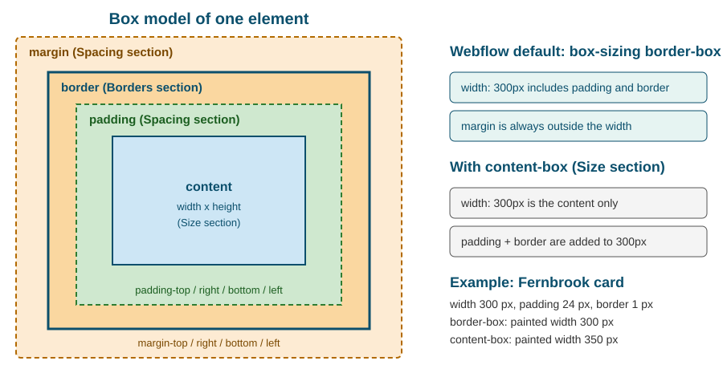

Style Panel and the Box Model
|
This content was generated with the assistance of AI and should be verified against the official documentation before being relied on in production. |
This page was checked against the Webflow Designer and the Webflow Help Center on 2026-10-28. Webflow is a hosted service without version numbers, so a control can move or gain options between two visits; the Style panel sections described here have kept their names and order since the Designer redesign of 2023, and https://webflow.com/updates announces additions. The Style panel is available on every plan, including the free Starter Site plan inside a Starter Workspace. Nothing on this page depends on a paid tier. The Designer API example uses @webflow/designer-extension-typings 2.2.2.
The Style panel is where a designer decides how an element looks, and it is the part of Webflow that most directly mirrors CSS: almost every control is one CSS property, one shorthand or a small group of related properties. Learning the panel is therefore the same thing as learning the CSS box model, the cascade and the units of CSS, with a visual interface on top. This page walks the panel section by section, shows the CSS each control writes, explains units and the box-sizing rule Webflow applies, and teaches how to read the colour indicators that say where a value comes from. The next pages build on it: Classes, Combo Classes and Selectors explains what the panel edits (a class, not an element), Flexbox and Grid Layouts and Positioning and Overflow go deep into the Layout and Position sections, and Responsive Design and Breakpoints explains the breakpoint dimension of every control.
The running example is the Fernbrook Gardens site, a fictitious botanical garden. The job on this page is to style a "Plant card" for the Fernbrook plant catalogue: a white card with an image, a name, a short description, 24 px of inner space, a one pixel border, rounded corners and a soft shadow, laid out so that several cards sit on a row and wrap on small screens.
What the Style panel edits
Four ideas explain every behaviour of the panel.
-
The panel edits a selector, not an element. When an element has a class, the panel writes into that class’s rule, so every element with the class changes at once. When the element has no class, the panel offers to style the element’s tag, or the element itself with an automatic name. The "Selector" field at the top of the panel names the target and is the first thing to read before typing a value.
-
The panel edits one breakpoint and one state at a time. The breakpoint bar and the state menu next to the selector decide which media query and which pseudo-class receive the value. Editing "Tablet" with the hover state selected writes inside
@media (max-width: 991px)and:hover. -
Each control writes plain CSS. There is no private styling language. What is published is a stylesheet generated from the selectors and their values, as described in HTML and CSS in Webflow.
-
Values can be tied to variables. A control can hold a literal value or a variable, described in Variables and Modes, and the generated CSS then contains
var(--name).
Webflow organises the panel in nine sections, in this order: Layout, Spacing, Size, Position, Typography, Backgrounds, Borders, Effects and Custom properties. Sections can be collapsed, and Focus mode lets a designer expand one section at a time and hide the rest, which helps on a laptop screen. The section list below is the map of the page.
| Section | What it controls | Main CSS properties |
|---|---|---|
Layout |
How the element lays out itself and its children |
|
Spacing |
Space outside and inside the box |
|
Size |
Dimensions and how replaced content fits |
|
Position |
Positioning scheme and floats |
|
Typography |
Text appearance, inherited by descendants |
|
Backgrounds |
Fills of the box |
|
Borders |
Outline of the box and its corners |
|
Effects |
Visual effects and interaction hints |
|
Custom properties |
Any CSS property the panel has no control for |
any property and value, including custom properties |
The box model that Webflow draws
Every element in CSS is a rectangular box made of four layers, from the inside out: the content, the padding around it, the border around the padding and the margin outside the border. The generic explanation, with the worked arithmetic, is on the box model page of the HTML and CSS guide; this page shows where each layer lives in the Webflow panel.

The figure is an original schematic. The Spacing section of the panel draws the same nested rectangles as a clickable diagram: the outer rectangle is the margin, the inner one is the padding, and each of the four sides has a field.
| Layer | Where it is edited | Behaviour |
|---|---|---|
Content |
Size section (width, height) |
The area that holds text, images and child elements; a block element fills the available width by default |
Padding |
Spacing section, inner rectangle |
Space between the content and the border; takes the element background; clicks on it count as clicks on the element |
Border |
Borders section |
Drawn between padding and margin; takes part in the width when |
Margin |
Spacing section, outer rectangle |
Transparent space outside the border; never part of the element width; adjacent vertical margins of block elements can collapse |
Margin collapsing and why gap is preferred
Vertical margins of block elements that touch can combine into the larger of the two instead of adding up. Two stacked paragraphs with a bottom margin of 16 px and a top margin of 16 px are 16 px apart, not 32 px. The rule does not apply to flex and grid items, nor to elements with padding or a border between the margins. Because of the surprises, current Webflow practice is to space siblings with the gap property of a Flex or Grid parent (Layout section) instead of margins on the children, and to keep margins for the outer position of a block in the flow. The same advice appears in the Webflow Way guidance on classes.
box-sizing in Webflow
The one rule that decides what "width" means is box-sizing. In the CSS specification the initial value is content-box, which makes width the width of the content and adds padding and border on top. Webflow’s webflow.css applies box-sizing: border-box to all elements, so the width the designer types in the Size section is the painted width of the box, padding and border included. This is the behaviour almost every modern CSS reset chooses, and it is why a Webflow card with width: 300px and 24 px of padding stays 300 px wide.
The Size section also exposes a Box sizing control (added in the update "Additional sizing and layout controls"), so a single element can be switched back to content-box without custom CSS. That is occasionally useful for media elements with a border, where the designer wants the image size to stay exact. Otherwise leave the default.
/* Painted width 300px: padding and border are inside it (Webflow default). */
.plant-card {
box-sizing: border-box;
width: 300px;
padding: 24px;
border: 1px solid #d8e2d4;
}
/* Painted width 350px: 300 + 2 x 24 padding + 2 x 1 border = 350. */
.plant-card.is-content-box {
box-sizing: content-box;
}A consequence of border-box is that percentages and padding combine safely. A column with width: 50% and padding: 24px still occupies exactly half of its parent, which is not true with content-box. A consequence of the user interface is that the Size section shows the width the designer typed, not the computed content width, so the Navigator and the computed values of the browser developer tools are the places to read the final numbers.
Layout
The Layout section chooses the display value of the element and, for flex and grid, exposes the controls of the layout model. The choices are Block, Flex, Grid, Inline block, Inline and None. Setting a parent to Flex or Grid turns its children into flex or grid items and reveals the direction, wrap, justify, align, gap and order controls, or the track, area and gap controls of a grid. Those controls are the subject of Flexbox and Grid Layouts; this section only lists what is written.
| Control | CSS written |
|---|---|
Display: Block |
|
Display: Flex |
|
Display: Grid |
|
Display: Inline block |
|
Display: Inline |
|
Display: None |
|
Direction (horizontal, vertical) |
|
Wrap |
|
Justify and align |
|
Gap |
|
Child alignment and sizing |
|
Display: None deserves a note. It is how an element is hidden at a breakpoint, and it removes the element from the page flow and from assistive technology. It is not a security measure: the element is still in the HTML that is delivered. The pattern is described in Responsive Design and Breakpoints, and conditional visibility of CMS-driven elements, which removes the element from the HTML, in Conditional Visibility and Dynamic Embeds.
The Fernbrook plant-card row is a Flex parent with wrapping and a gap, and each card is a flex item with a basis:
.plant-card-row {
display: flex;
flex-direction: row;
flex-wrap: wrap;
gap: 24px;
justify-content: flex-start;
}
.plant-card {
flex: 1 1 280px; /* grow, shrink, basis */
}Spacing
Spacing holds margin and padding. Each has four fields (top, right, bottom, left) and the diagram makes it possible to drag a value instead of typing it. Dragging on a number scrubs it; typing accepts any supported unit, and an empty field means "not set", which is different from 0.
Modifier keys speed up symmetric edits. Holding Shift while dragging or typing changes all four sides together, and holding Option on macOS (Alt on Windows) changes the two opposite sides together. The margin fields additionally accept auto, which is the basis of horizontal centring: a block with a fixed width and margin-left: auto; margin-right: auto is centred in its parent. Negative margins are accepted and pull an element outside its normal place, which is occasionally useful and often a sign that the layout should be rebuilt with flexbox or grid.
.plant-card {
padding: 24px; /* four sides set with the Shift modifier */
margin-bottom: 0;
}
.section-narrow {
max-width: 720px;
margin-left: auto; /* both sides set with the Option / Alt modifier */
margin-right: auto;
padding-left: 16px;
padding-right: 16px;
}Webflow writes the longhands, not the padding shorthand, for most edits. Both publish the same result, but longhands are easier to override on a breakpoint: setting only padding-left on Mobile does not repeat the other three values.
Size
The Size section holds width and height, their minimum and maximum, the aspect ratio, overflow, fit and position of replaced content, and box sizing.
| Control | CSS written and notes |
|---|---|
Width, Height |
|
Min W, Min H |
|
Max W, Max H |
|
Aspect ratio |
|
Overflow |
|
Fit |
|
Position (of the content) |
|
Box sizing |
|
Some Size controls are disabled for elements where they would have no effect, for example when a container element has no content that can be fitted. The fit controls apply only to replaced elements such as images and video.
A common recipe is a responsive card image: width: 100%, aspect-ratio: 4 / 3 and object-fit: cover. The image fills the card width, keeps its shape at every breakpoint and is cropped instead of squashed. Combined with the srcset Webflow generates, covered in Images and Assets, it also avoids layout shift while the image loads.
.plant-card-image {
width: 100%;
aspect-ratio: 4 / 3;
object-fit: cover;
object-position: 50% 40%;
}
.plant-card-body {
max-width: 60ch;
overflow: hidden;
}Overflow and what it hides
overflow: hidden clips children that extend outside the box and creates a new block formatting context, which also contains floated children. It is the usual way to clip an image zoomed on hover inside its rounded card. overflow: auto adds a scrollbar only when content does not fit, and scroll always reserves the scrollbar. Be careful with overflow: hidden on an ancestor of a sticky element: it can make position: sticky stop working, because the ancestor becomes the scroll container. The combination is discussed in Positioning and Overflow.
Position
Position chooses the positioning scheme and, for non-static schemes, reveals the offsets. The choices are Static (the default), Relative, Absolute, Fixed and Sticky. Float and clear are in the same section for the rare cases of text wrapping around an image.
| Scheme | Behaviour | Typical use |
|---|---|---|
Static |
Normal flow; offsets and z-index do not apply |
Everything by default |
Relative |
Normal flow, offset from its own place; creates the reference for absolute children |
The parent of an overlay |
Absolute |
Out of flow, placed against the nearest positioned ancestor |
Badges, overlays, decorative layers |
Fixed |
Out of flow, placed against the viewport |
Floating buttons, cookie banners |
Sticky |
Normal flow until a scroll threshold is reached, then stays put |
Section headers, table of contents |
The Fernbrook card shows a "Rare" badge in the top-right corner of the image, a classic use of relative and absolute:
.plant-card-media {
position: relative; /* reference for the badge */
}
.plant-card-badge {
position: absolute;
top: 12px;
right: 12px;
z-index: 2; /* paint above the image */
}z-index is meaningful only on positioned elements (and on flex and grid items), and it works inside a stacking context, so a high value inside one context cannot rise above a sibling context. The guidance on stacking contexts is on the positioning page of the HTML and CSS guide.
Typography
Typography is the only section whose values are mostly inherited. A font, size, colour or alignment set on a parent flows into every descendant that does not set its own value. Webflow therefore recommends setting the base type on the Body element (or on a body class) and overriding sparingly on headings and special blocks. The inheritance rule matters when tracing a value, as the indicators below show.
| Control | CSS written |
|---|---|
Font |
|
Weight |
|
Size |
|
Color |
|
Line height |
|
Letter spacing |
|
Align |
|
Style |
|
Decoration |
|
Transform |
|
Indent |
|
Columns |
|
Direction, white space, break, overflow, text shadow |
|
Fonts, web-font loading and the type scale with clamp() have their own page, Typography and Fonts.
body {
font-family: "Source Sans 3", sans-serif;
font-size: 1rem;
line-height: 1.5;
color: #1f2d1f;
}
.plant-card-title {
font-size: 1.375rem; /* overrides only the size; family and colour are inherited */
font-weight: 600;
line-height: 1.25;
}The font-size: 1.375rem of the title is relative to the root font size, which is 16 px unless the site changes it, so the title is 22 px. Using rem for type and spacing keeps a layout proportional when a visitor raises the default text size in the browser, which is an accessibility concern covered in Accessibility.
Backgrounds
Backgrounds are layered: the panel lists image and gradient layers (the first is on top) and one background colour at the bottom. Each image layer has its own size (auto, cover, contain), position, repeat and attachment (scroll or fixed). The section also has a Clipping option, which writes background-clip, notably text for gradient-filled text.
.hero {
background-color: #1f3d2b;
background-image:
linear-gradient(rgba(0, 0, 0, 0.35), rgba(0, 0, 0, 0.35)),
url("https://cdn.prod.website-files.com/placeholder/fernbrook-greenhouse.avif");
background-size: cover, cover;
background-position: 50% 50%, 50% 50%;
background-repeat: no-repeat, no-repeat;
}The overlay recipe (a dark gradient over a photograph, so white text stays readable) is a two-layer background written as above. Gradients, blend modes and the accessibility check of overlaid text are in Backgrounds, Borders and Effects. A background image is not an <img>: it has no alt text and is ignored by assistive technology, so use it for decoration only and use an Image element for content.
Borders
The Borders section sets style, width and colour for all four sides or for one, and the radius of the four corners. The border-style default is none, so a width alone draws nothing; set the style first.
.plant-card {
border: 1px solid #d8e2d4;
border-radius: 12px;
}
.plant-card-badge {
border-radius: 999px; /* fully rounded pill */
}
.plant-card-divider {
border-top: 1px solid #d8e2d4;
}Radius is clipped by overflow: hidden: an image inside a rounded card shows square corners unless the card hides overflow or the image has the same radius. Because Webflow draws borders inside the box under border-box sizing, a 1 px border on a 300 px card does not change the card width.
Effects
Effects groups the visual refinements that do not change layout. Most of them are lists: a box can have several shadows, filters or transforms, each with its own settings.
| Control | CSS written |
|---|---|
Opacity |
|
Blending mode |
|
Box shadows |
|
Filters |
|
Backdrop filters |
|
Transforms |
|
Transitions |
|
Cursor |
|
Pointer events |
|
Outline |
|
.plant-card {
box-shadow: 0 4px 12px rgba(0, 0, 0, 0.12);
transition: transform 200ms ease, box-shadow 200ms ease;
}
/* Written with the "Hover" state selected in the Style panel. */
.plant-card:hover {
transform: translate(0, -4px);
box-shadow: 0 8px 20px rgba(0, 0, 0, 0.18);
}Transforms and transitions here are the simple, declarative tools. Anything that needs a timeline, a scroll trigger or sequencing belongs to Interactions with GSAP. The CSS counterpart of transitions is on the transitions page of the HTML and CSS guide. Respect prefers-reduced-motion for large movements, covered in the accessibility page.
Custom properties
The last section lets a designer type any CSS property and value that the panel has no control for, and it is also where CSS custom properties (--name: value) are declared on a selector. It removes most reasons to open a Code Embed for a single declaration. The property name is validated and the value is written verbatim into the same rule as the other controls, on the selected breakpoint and state.
.plant-card {
--card-radius: 12px; /* a custom property declared on the class */
border-radius: var(--card-radius);
content-visibility: auto; /* a property with no dedicated control */
contain-intrinsic-size: auto 420px;
}
.plant-card-grid {
scroll-snap-type: x mandatory;
}Custom properties declared per class are the manual precursor of the site-wide variables that Variables and Modes describes. Prefer Variables when a value is reused across classes, because variables have a UI, appear in pickers, support modes and survive renaming. Use a class-level custom property for a value that is local to one component and its children.
Units
Every numeric field accepts a unit, chosen from the small menu at the right of the field or typed after the number (2rem, 50%). The unit decides what the number is relative to, and mixing the right units is most of responsive design.
| Unit | Relative to | Good for |
|---|---|---|
|
A CSS pixel, fixed |
Borders, hairlines, shadows, small fixed offsets |
|
The root font size (16 px by default) |
Type sizes, spacing, container widths that should scale with user text settings |
|
The font size of the element itself (the parent for |
Padding that tracks the element text size, such as buttons; avoid nesting for font sizes |
|
A property of the parent: width of the parent for width, height of the parent for height |
Fluid columns, images at 100% |
|
1% of the viewport width or height |
Full-width sections, hero heights |
|
Width of the digit 0 in the current font |
Readable line length such as |
|
A share of free space in a grid track |
Grid tracks only |
|
Computed by the browser |
Centring with margins, content-sized boxes |
Recent additions to the unit menu include the dynamic viewport units (dvh, svh, lvh), which fix the long-standing problem that 100vh on a phone is taller than the visible area when the address bar is showing. Check the unit menu for the current list. A full-height Fernbrook hero is therefore best written min-height: 100svh with a 100vh fallback in an earlier declaration. Webflow writes one declaration per property, so a fallback needs a Custom properties entry or an Embed, and most projects accept the unit on its own.
The % unit has two traps. A percentage height works only when the parent has a definite height; otherwise it computes to auto. A percentage padding is relative to the width of the parent, even for top and bottom, which is the basis of the old "padding-hack" for aspect ratios that aspect-ratio has replaced.
calc(), min(), max() and clamp()
A field accepts a CSS math function when the value is typed: type calc( and the field becomes a free-text expression. Webflow supports calc(), min(), max() and clamp(), and the function variables introduced in 2025 turn them into reusable variables. calc() mixes units, which is the only way to subtract a fixed gutter from a fluid width; clamp(min, preferred, max) gives a value that grows with the viewport between two limits.
.plant-card {
width: calc(100% - 2rem);
max-width: min(100%, 28rem);
}
.heading-hero {
/* grows from 2rem to 4rem between narrow and wide viewports */
font-size: clamp(2rem, 1.2rem + 3vw, 4rem);
}Operators inside calc() need spaces around the plus and minus signs (100% - 2rem), while multiplication and division do not. The Style panel field shows invalid expressions in red and does not write them.
Reading the indicators: where does this value come from?
The labels of the Style panel carry a colour that says where the value of a property comes from. This is the quickest debugging tool in the Designer: when an element does not look as expected, read the labels of the properties involved instead of guessing.
| Indicator | Meaning | What to do |
|---|---|---|
Blue label |
The value is set on the selector being edited, at the current breakpoint and state |
Editing changes this rule |
Orange label |
The value is not set here but inherited: from a parent element (Typography), from another class in the stack such as the base class under a combo class, or from a wider breakpoint |
Hover or click the label to see the source; edit it on the source selector to change all uses, or set a local value to override |
Purple field |
The value is bound to a variable |
Edit the variable to change every use; unbind to type a literal value |
No colour |
The property has no value anywhere in its cascade, so the browser default applies |
Set a value if the default is wrong |
The exact shades are part of the Designer interface and have been adjusted over the years, so rely on the legend in the Style panel overview and on the tooltip that appears when hovering a label. What is stable is the logic: set here, inherited, bound to a variable, or not set.
A worked trace for the Fernbrook card title: the title looks grey on Mobile. Select the heading, select Mobile portrait in the breakpoint bar and open Typography. The Color label is orange, so the colour is inherited rather than set on this class. Hovering shows it comes from the Mobile landscape rule of the same class, which a teammate edited last week. Clicking the label’s source jumps to that rule, and clearing it there restores the Desktop colour. Without the indicators the cause would be hard to find, because the Desktop view looks correct.
The same technique explains most "why does my padding not apply" questions: an orange Padding label on a combo class means the value is coming from the base class below it, and a blue label with an unexpected value means the combo class itself overrides it. Class stacks, and the order in which they are compiled, are in Classes, Combo Classes and Selectors. The element-level view of the same information is the Navigator and the computed styles of the browser developer tools, which show the final value and the winning rule even for properties the panel does not mark.
Clearing styles
A value can be removed without selecting a replacement, which returns the property to inheritance or to the browser default and deletes the declaration from the generated CSS. This is different from typing 0 or auto, which writes a declaration.
-
Clear one property: right-click the label of a property and choose the clear option, or select the value and delete it. The label returns to orange (still inherited from elsewhere) or to no colour.
-
Clear a section: right-click the section title and clear all of its properties for the selected breakpoint and state.
-
Clear a breakpoint override: clear the property while that breakpoint is selected; the element returns to the value inherited from the wider breakpoint.
-
Remove a class from the element: this clears nothing in the class. It only detaches it; the class and its rule stay in the site until they are deleted or cleaned up.
Clearing happens on the selected selector. Clearing a value on a combo class removes the override and reveals the base class value, while clearing it on the base class changes every element that uses the base class. Check the selector field before clearing, and use the Undo history when the wrong rule was edited. The class cleanup tools, which remove unused classes, are in the classes page.
Doing it from code: the Designer API
Designer Extensions and hybrid apps can read and write the same properties through the Designer API. A style is the API object for a class, and its properties use CSS property names as keys and CSS strings as values. This example creates the Fernbrook card class with the values built on this page, in a Designer Extension running on a Developer workspace site.
// Typings: @webflow/designer-extension-typings 2.2.2
const style = await webflow.createStyle("plant-card");
await style.setProperties({
"box-sizing": "border-box",
"padding-top": "24px",
"padding-right": "24px",
"padding-bottom": "24px",
"padding-left": "24px",
"border-top-width": "1px",
"border-top-style": "solid",
"border-top-color": "#d8e2d4",
"border-top-left-radius": "12px",
});
// A value for the Tablet breakpoint only (media query max-width 991px)
await style.setProperties(
{ "padding-top": "16px", "padding-bottom": "16px" },
{ breakpoint: "medium" }
);
// Read it back
const props = await style.getProperties();
console.log(props["padding-top"]); // "24px" at the base breakpointSource: Webflow Designer API reference
The API writes longhand properties, and the options object selects the breakpoint (main, medium, small, tiny, and the larger ones) and the pseudo-state, matching the breakpoint bar and the state menu of the panel. Variables are bound by passing a variable object instead of a string.
Recommended workflow
-
Select the element and read the selector field first.
-
Set the base type on Body, and set widths with
max-widthand percentages instead of fixed widths. -
Build layout with Flex or Grid and
gap(Layout), and use margins only for outer position. -
Use
remfor type and spacing,pxfor borders and shadows,%andfrfor fluid layout. -
Style on Desktop first, then check Tablet and Mobile, reading the label colours of any property that looks wrong.
-
Move values that are reused into Variables, and keep one-off declarations in Custom properties.
-
Rename or delete classes through the selectors tools rather than clearing styles one by one.
Common mistakes and pitfalls
-
Editing the wrong selector. The commonest error is changing a base class when a combo class was meant, which restyles every use of the base class. Read the selector field and the number of elements that use the class before editing.
-
Typing a width and expecting content-box arithmetic. Webflow uses border-box, so adding padding does not widen the box. Tutorials written for plain CSS often add the padding to the width in their examples.
-
Setting
border-widthwithoutborder-style. Nothing is drawn. -
Fixed pixel heights on text containers. Text that wraps on a narrow screen overflows. Prefer
min-heightor padding. -
Percentage heights without a parent height. They compute to
auto. -
Using
100vhon mobile. Use a dynamic viewport unit. -
Hiding content with
display: noneand assuming it is secure. The markup is still delivered. -
Using background images for content. There is no alt text.
-
Relying on
overflow: hiddenwith sticky elements. The sticky element stops sticking. -
Overusing
!importantin Custom properties. It makes later overrides on breakpoints and combo classes fail silently.
Corrections to older tutorials
-
"The Style panel has a Margin / Padding / Size / Position / Typography … list." This is the older layout. The current panel has the nine sections described here, and Layout (display, flex and grid) became the first section.
-
"Webflow uses the default content-box sizing." Webflow applies
border-boxto all elements; older books that add padding to the width in their examples describe plain CSS. -
"Inherited values are shown in a single colour." The indicators distinguish set, inherited and variable-bound values; use the panel legend.
-
"Use custom code for a CSS property the panel lacks." The Custom properties section handles most such cases without a Code Embed.
-
"Pixels are the unit to use." The book-era advice to design in pixels is replaced by
rem,%, viewport andclamp()values for anything that should scale.